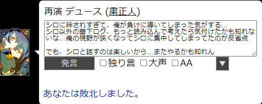
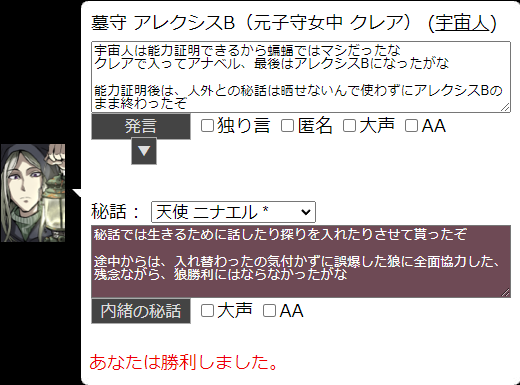
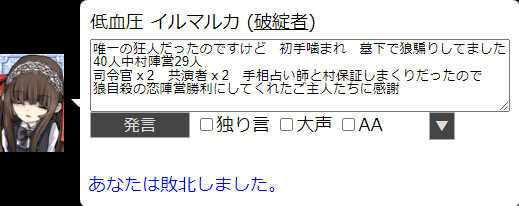
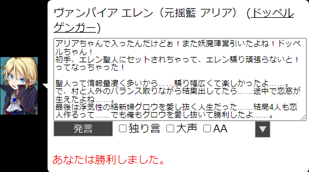
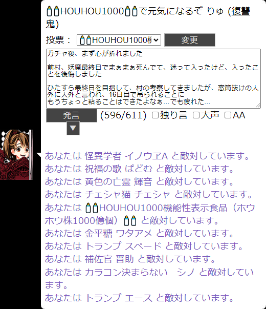
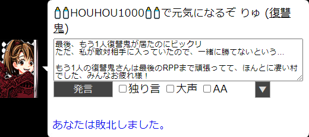
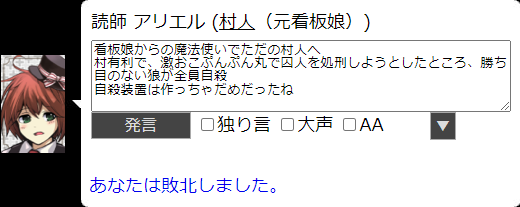
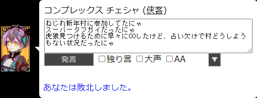

◇ ねじれ長期で参戦した村 ◇
31戦12勝
| 5/29 (17%) | 11月の頑張ってお祝いしたい村 | 粛正人 デュース | 2022/11/21 | |
| Win | 9/34 (26%) | ZAP有りのランダム村 | 宇宙人 アレクシスB (元クレア → アナベル) |
2022/08/27 |
| 5/40 (13%) | しっぽさん、輝音くん、ブラックモアちゃん、ほうほうさんおたおめ村 | 破綻者 イルマルカ | 2022/08/06 | |
| Win | 6/24 (25%) | シャッフル希望無効村 | ドッペルゲンガー エレン (元アリア) |
2022/07/16 |
| 8/43 (19%) | れんか泥沼カズマーンを祝う長期 | 復讐鬼 りゅ | 2022/06/11 | |
| Win | 3/26 (12%) | 6/1開始予定 長期村 | ドラキュラ レウィーシア | 2022/06/01 |
| Win | 8/36 (22%) | 長期その2 | 桜狼 クリスティ | 2022/04/28 |
| 2/30 (7%) | 長期？ 4/22予定 | 村人(元 看板娘) アリエル | 2022/04/22 | |
| 7/17 (41%) | 新年村！とら！トラ！虎！と英雄と夜と海の魔物もいるよ | 侠客 チェシャ | 2022/01/01 | |
| Win | 7/7 (100%) | ロイスくんと遊ぼう！ | 魔狼(元 仔狼) オデット | 2021/07/02 |
| 7/32 (22%) | 【おはなはな四次会】一匹狼忖度村 | 一匹狼 ベニカ | 2021/05/10 | |
| Win | 45/59 (76%) | 【おはなはな三次会】暴れ足りないあなたへ贈る村 | 鴉 メリーメリー | 2021/05/03 |
| Win | 13/60 (22%) | 【おはなはなの二次会】人外だらけのランダム村 | 悪女 ガルベン | 2021/04/22 |
| 62/99 (63%) | 第おはなはな回99人村 | 凍狼 りゅ | 2021/03/21 | |
| Win | 6/24 (25%) | 桜衣さん誕生日祝いRP村 | 鐘狼 サンディ | 2021/01/19 |
| Win | 12/28 (43%) | 新年うしし村(2陣営) | 幻狼 シンク | 2021/01/09 |
| 17/32 (53%) | 第9.9回 役職希望有効村 | 冒涜者 ユウキ | 2020/12/14 | |
| 28/54 (52%) | 第9回99人村二次会 | 蛞蝓 エーリク | 2020/11/22 | |
| 42/99 (42%) | 9回目の99人村【秋の大人数長期村】 | 破綻者(元 内通者) ミモザ | 2020/10/22 | |
| Win | 4/47 (9%) | 【布教か】誰歓！語尾を楽しむ第8回の三次会【吸血か】 | 教皇 テレサ | 2020/08/19 |
| 15/69 (22%) | 第8回99人村2次会 | 銀狼 クロック | 2020/07/29 | |
| 17/99 (17%) | 【誰歓】ひと夏の経験的第8回99人村 | 気占師 りゅ (元 始祖→旗手→影法師) |
2020/07/06 | |
| 16/26 (62%) | 【誰歓】村ロスたちの長期村 | 宗祖 アンズ | 2020/06/10 | |
| 11/39 (28%) | 【誰歓】第7.9回 妖魔と憑狼とストーカー村 | 妖獣 アルレット | 2020/05/02 | |
| 29/72 (40%) | 【誰歓】来たれ！第7回99人村二次会！ | 闘神 ナイト | 2020/03/29 | |
| Win | 46/99 (46%) | 【誰歓】待ってた第7回99人村 | 夜廻 ヴァネッサ | 2020/03/06 |
| 17/42 (40%) | 第6.9回 闇鍋（長期） | 智狼 アニス | 2020/02/14 | |
| Win | 21/31 (68%) | ねずみ年だよ。たくさんの鼠と新年を祝おう長期村 | 話術士 ヨル | 2020/01/02 |
| 4/19 (21%) | クリスマスだけどランダムやる村 | 絶対人狼 マルセイユ | 2019/12/26 | |
| 2/73 (3%) | 第6回二次会救世勇者のやり直し村 | 堅狼(仇敵) ひらべる | 2019/11/29 | |
| 25/99 (25%) | 【誰歓】2周年記念 第6回99人村 | 純血鬼 ルージュ | 2019/10/29 |
【4列目】グラデーション：陣営変化
| 11月の頑張ってお祝いしたい村 | 粛正人 デュース | 2022/11/21 | ||||
|
感情に流されて、盤面とログをしっかり見れなくなってた気がするな  |
||||||
| ZAP有りのランダム村 | 宇宙人 アレクシスB (元クレア → アナベル) |
2022/08/27 | ||||
|
ほうほうさんの誕生日をお祝いするために入りました  |
||||||
| しっぽさん、輝音くん、ブラックモアちゃん、ほうほうさんおたおめ村 | 破綻者 イルマルカ | 2022/08/06 | ||||
|
配役的に狼勝利無理な村だったので、人外勝利に全力で頑張ってくれたご主人たちに感謝  |
||||||
| シャッフル希望無効村 | ドッペルゲンガー エレン (元アリア) |
2022/07/16 | ||||
|
ドッペルゲンガーで初手、聖人にセットされて、つよつよ能力を手に入れ、  |
||||||
| れんか泥沼カズマーンを祝う長期 | 復讐鬼 りゅ | 2022/06/11 | ||||
|
前村が妖魔最終日生存で疲れてたので迷ったけど、ID公開のお祝いで、   |
||||||
| 6/1開始予定 長期村 | ドラキュラ レウィーシア | 2022/06/01 | ||||
|
占われたら死ぬ妖魔。毎日毎日、更新時間がドキドキだった！
|
||||||
| 長期その2 | 桜狼 クリスティ | 2022/04/28 | ||||
|
36人中、狼3匹からのスタートだったわ
|
||||||
| 長期？ 4/22予定 | 村人(元 看板娘) アリエル |
2022/04/22 | ||||
|
看板娘から魔法使いにより司令官保証の素村人へ  |
||||||
| 新年村！とら！トラ！虎！と英雄と夜と海の魔物もいるよ | 侠客 チェシャ | 2022/01/01 | ||||
|
確定出現護衛系の英雄3人と、私スーパータフガイ(侠客)の、  |
||||||
| ロイスくんと遊ぼう！ | 魔狼(元 仔狼) オデット | 2021/07/02 | ||||
|
少人数でゆるゆる騙りを楽しみました
|
||||||
| 【おはなはな四次会】一匹狼忖度村 | 一匹狼 ベニカ | 2021/05/10 | ||||
|
一匹狼希望して一匹狼になれました！
|
||||||
| 【おはなはな三次会】暴れ足りないあなたへ贈る村 | 鴉 メリーメリー | 2021/05/03 | ||||
|
ほぼ確定ぼっち蝙蝠なのに殺されましたわ(´・ω・｀)
|
||||||
| 【おはなはなの二次会】人外だらけのランダム村 | 悪女 ガルベン | 2021/04/22 | ||||
|
長期ねじれではじめての恋！
|
||||||
| 第おはなはな回99人村 | 凍狼 りゅ | 2021/03/21 | ||||
|
村陣営が多くて早い段階から負けは見えてたけど、
|
||||||
| 桜衣さん誕生日祝いRP村 | 鐘狼 サンディ | 2021/01/19 | ||||
|
お誕生日の桜衣さんと赤窓囲みました
|
||||||
| 新年うしし村(2陣営) | 幻狼 シンク | 2021/01/09 | ||||
|
奇術師が入れ替えする度に赤窓は朝から仕様調べたりバタバタしてました
|
||||||
| 第9.9回 役職希望有効村 | 冒涜者 ユウキ | 2020/12/14 | ||||
|
背徳とか下僕系好きなので希望してみました
|
||||||
| 第9回99人村二次会 | 蛞蝓 エーリク | 2020/11/22 | ||||
|
妖魔さん、狼さん、ずっと応援していました！
|
||||||
| 9回目の99人村【秋の大人数長期村】 | 破綻者(元 内通者) ミモザ | 2020/10/22 | ||||
|
狼の動きがさっぱりで、何をどう頑張っても勝てる気がしなくて…
|
||||||
| 【布教か】誰歓！語尾を楽しむ第8回の三次会【吸血か】 | 教皇 テレサ | 2020/08/19 | ||||
|
地道な布教活動の結果、私が直接布教した信者さん12人
|
||||||
| 第8回99人村2次会 | 銀狼 クロック | 2020/07/29 | ||||
|
また引いた、確定役職！このチップと銀狼ってなんか合ってるなって思ってしてました。
|
||||||
| 【誰歓】ひと夏の経験的第8回99人村 | 気占師 りゅ (元 始祖→旗手→影法師) |
2020/07/06 | ||||
|
影法師から殺人鬼になりたかったのに…1票差で気占師に
|
||||||
| 【誰歓】村ロスたちの長期村 | 宗祖 アンズ | 2020/06/10 | ||||
|
「アンズ教は人を信じない心を信仰しているの！」
|
||||||
| 【誰歓】第7.9回 妖魔と憑狼とストーカー村 | 妖獣 アルレット | 2020/05/02 | ||||
|
覗きもリスト流出もないハズが、覗かれて、リストも流出されて…
|
||||||
| 【誰歓】来たれ！第7回99人村二次会！ | 闘神 ナイト | 2020/03/29 | ||||
|
刑部狸騙りをして、噛まれに行きました。
|
||||||
| 【誰歓】待ってた第7回99人村 | 夜廻 ヴァネッサ | 2020/03/06 | ||||
|
人外が潰し合ったので村有利な感じでした
|
||||||
| 第6.9回 闇鍋（長期） | 智狼 アニス | 2020/02/14 | ||||
|
狼なのにさっさと噛まれて墓下から恋撲滅のために動いていた毎日でした
|
||||||
| ねずみ年だよ。たくさんの鼠と新年を祝おう長期村 | 話術士 ヨル | 2020/01/02 | ||||
|
話術士は毎日誰かを窓に呼んでお話できてほんとに楽しかったです
|
||||||
| クリスマスだけどランダムやる村 | 絶対人狼 マルセイユ | 2019/12/26 | ||||
|
飽和しないように気を付けてたんだよ？気を付けてても…妖魔多すぎない？
|
||||||
| 第6回二次会救世勇者のやり直し村 | 堅狼(仇敵) ひらべる | 2019/11/29 | ||||
|
仇敵付きは毎日が辛かったです…今なら、耐えれるかも！？
|
||||||
| 【誰歓】2周年記念 第6回99人村 | 純血鬼 ルージュ | 2019/10/29 | ||||
|
はじめての長期！右も左も分からない状況で、仁さんに墓下送りにされました。
|
||||||


Copyright(c)2020-2022 ryu all rights reserved.